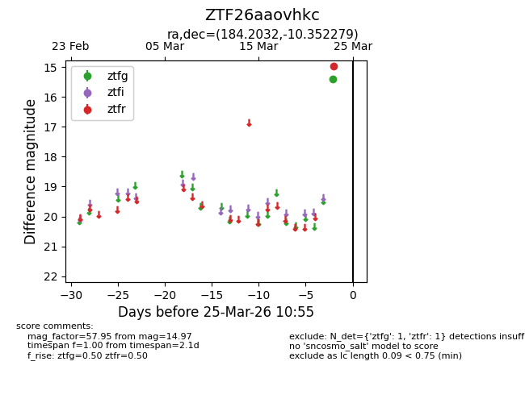
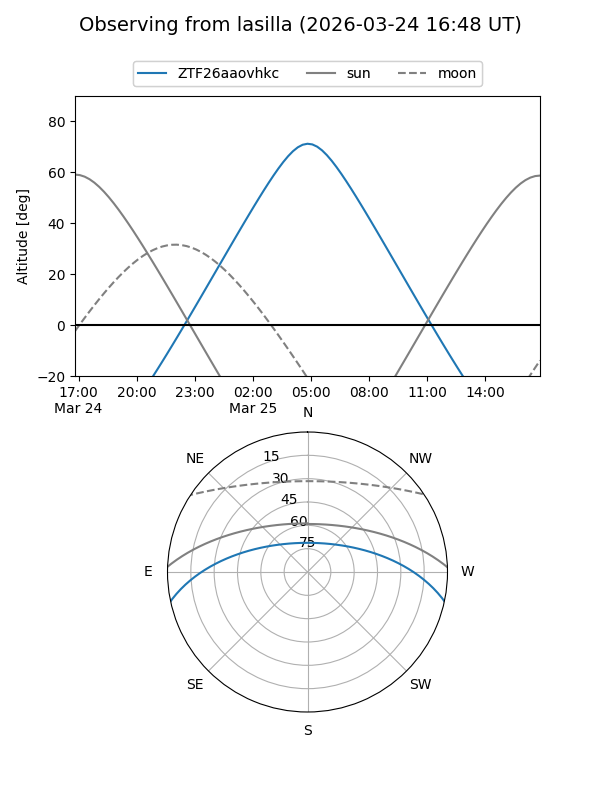
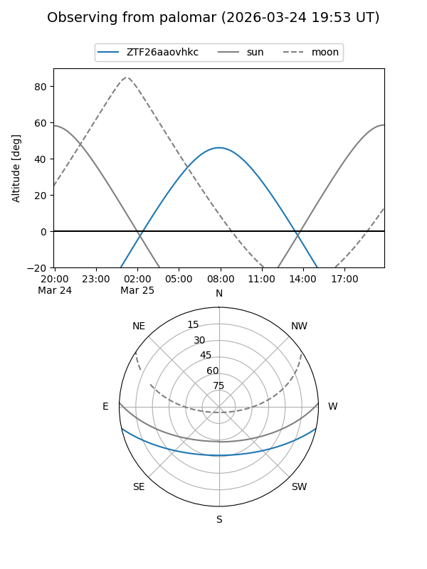

ZTF26aaovhkc
Target ZTF26aaovhkc at 2026-03-25 10:57
Aliases and brokers:
FINK: link
Lasair: link
ALeRCE: link
alt names
ZTF26aaovhkc (ztf,fink_ztf)
Coordinates:
equatorial (ra, dec) = 184.2032,-10.35228
equatorial (HMS+DMS) = 12:16:48.78,-10:21:08.21
galactic (l, b) = (289.1453,+51.59022)
Flags:
Photometry:
last ztfg=15.40, ztfr=14.97
1 ztfg, 1 ztfr detections
Lightcurve

Visibility


Additional plots